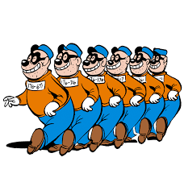
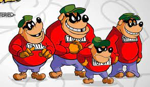
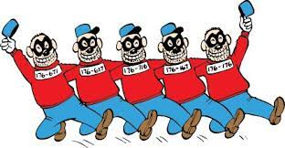

¨
Karhukoplan offisiaalinen fanisivu
Karhukopla is Life
Karhukopla is Love
Karhukopla is laugh



Karhukopla (engl. The Beagle Boys) on Carl Barksin luoma Aku Ankka -sarjakuvissa esiintyvä konnajoukko, joka toistuvasti pyrkii ryöstämään Roope Ankan rahat, mutta epäonnistuu yrityksissään ja joutuu vankilaan. Karhukopla esiintyi ensimmäisen kerran tarinassa Ankkalinnan pamaus (Terror of the Beagle Boys) vuonna 1951.[1]Karhuveikot pukeutuvat yleensä mustaan silmänaamioon, sinisiin housuihin ja punaisiin paitoihin, joissa on numeroista 1, 7 ja 6 koostuvat sarjanumerot. Lakit voivat olla joko sinisiä (Aku Ankka -lehdessä) tai vihreitä (Aku Ankan taskukirjan ja Roope-setä-lehden italialaisissa tarinoissa).